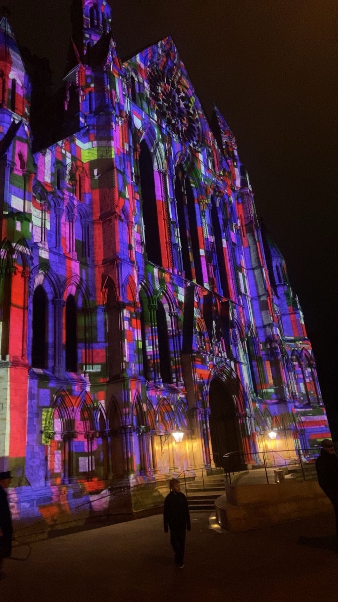

A bit about me
Home and Family
I have lived in Melton Mowbray for my whole life with my parents, older brother and older sister.
I am lucky enough to have a big family who support me in all aspects of my life, both challenging me and having my back when I need it.
Every weekend I am at home, I will be at Parkrun on Saturday morning either running, pacing or volunteering and the rest of the day spent with my family.
University of York
I am about to start my 3rd and final year at the University of York as a computer science student.
My favourite modules have included engineering where I got the opportunity to work with my peers to produce a life simulation game and Intelligent systems where I built an image recognition algorithm.
Alongside my studies I am a part of Girls who run society and love to lead like minded girls on running routes around my favourite city.
A highlight would be running to the York Minster during Winter and seeing the light show.

Sport
I have competed in various sport since I was 8 years old, starting off as a competitive swimmer achieving national level.
Throughout 5 years of secondary school, I was part of the netball team and at 16 I started to run competitively.
Since then, I have completed multiple half marathon races, achieving first under 18 Liverpool 2021, and finished my first marathon in 2024 in Leeds.
My next challenge is to take up triathlon and complete an Ironman within the next 2 years.
Cadets
From the ages 12-18 I was a part of the army cadet force attending my local detachment in Melton Mowbray.
During my 6 years I achieved the rank of sergeant, attending many training weekends away and helping the younger cadets to progress in their ranks.
During my final year I was appointed Lord Lieutenant Cadet of Leicestershire which is one of my proudest achievements to this day, being a part of the chosen 3 out of applicants.
My year in the role I escorted Princess Anne around the DATR, did a reading at the Queens memorial service and was on the panel to choose young person of the year.